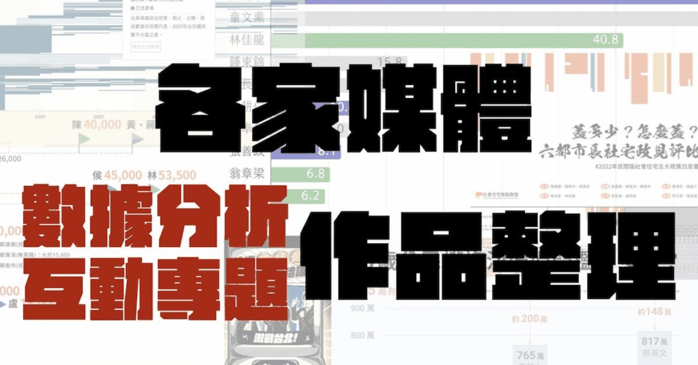

This article is written in Chinese.
2022.11.13 · 數位敘事
【2022 九合一選舉】新聞媒體互動專題總整理：有哪些有趣的選前分析？

本篇介紹各家媒體之互動與數據專題，圖片皆截自原媒體網站。
詳細圖文並茂文章版本請見vocus網站：https://vocus.cc/article/6370e370fd89780001182708
近年來，許多優質的新聞媒體開始投入數位敘事、數據分析的元素，更花時間投入在選前、選後的分析，試圖打破過去傳統政黨思維的投票意念，期待選民真正能用各種候選人的面向去評斷、並蓋下每個人認為正確的選擇。
每兩年的選舉，都是新聞媒體很好拿來「練功」的題目。2022 年末也不例外。
本篇盤點了目前選前幾家優質的新聞媒體，目前已經完成的一些互動專題或數據分析專題，不妨也可以來看看、玩玩這些資料與圖表，或許會得到不一樣的收穫。 下面將以該媒體「運用的資料」作為區分：
財產申報資料
首先，最常被各大媒體拿來運用的資料就是選前由中選會公布的「財產申報」。今年也不例外，只是要運用這筆資料挺麻煩，因為多為 PDF 檔，且多是掃描檔，整理起來可能挺費工。 讓我們來看看各家媒體怎麼運用這筆數據吧！
【新新聞X風傳媒】獨家調查》六都加新竹808位議員候選人116位具地產背景，囤房稅在議會能出頭嗎？
https://new7.storm.mg/article/4580677
- 資料：媒體進行家族財產調查，輔以財產申報資料
- 規模：六都 + 新竹市各議員候選人
新新聞與風傳媒合作，針對六都與新竹市的議員候選人，進行家族財產調查。其中他們發現，808位議員候選人中，有超過一百味參選人經營房地產相關事業。又以新北市人數最高、台中市次之。
這篇文章並不全然使用財產申報，而更進一步爬梳家族關係，我覺得是一個相當磅礴的一個專題。
【遠見】候選人身家全都露！有人房產王；也有人扛貸7億
https://www.gvm.com.tw/article/96127
- 資料：財產申報資料
- 規模：所有縣市長候選人
這是一篇單純的數據分析文章，是新聞所的子軒學長寫的（推薦一下 xD）。
其中以三個面向分析：財力、扛貸、土地。文中發現，屏東縣長候選人蘇清泉總資產最多、桃園市長候選人鄭寶清債務最多（來自土地與房屋貸款，名下有12筆土地和一筆不動產申報）、嘉義市長參選人陳泰山持有土地最大。
這是一個挺有趣的分析，雖然財力或跟執政能力不一定相關。但這樣的揭露也可以讓人們思考，到底「政治」是不是有錢人的工具？
歷年選舉得票資料
得票資料、候選人年齡、候選人性別、候選人政黨......，這些皆是選舉的基本元素。許多媒體也會透過圖表回顧歷年來的選舉情況。
【中央社】選舉數據分析
https://www.cna.com.tw/topic/newstopic/3990.aspx
- 資料：歷年得票數據
- 規模：所有縣市長候選人
《中央社》製作了一系列「九合一選舉」的專題頁面。其中包含一些 daily 文章外，頁面向下滑動也可以看到他們簡單製作了一個「選舉數據分析」，分析近三十年來縣市長候選人得票佔總選舉人數變化。
【關鍵評論網】九合一大選選舉專題
https://www.thenewslens.com/election/2022
- 資料：眾多
- 規模：各篇不同 《關鍵評論網》也製作了九合一選舉頁面，其中的「圖說選舉」專欄，密集的透過數據分析方式，帶大家看特定的選舉議題和故事。 舉例而言，「中華民國憲法增修條文增訂第一條之一條文修正案」，俗稱「18歲公民權修憲案」，被稱作「門檻極高」。《關鍵》嘗試用圖表將過去的總統投票數做比較，試圖呈現出到底「門檻極高」是什麼概念。
政見收集與政策兌現
作為「理性選民」，若能拋開政黨成見，看待實際候選人所端出的政見，及兌現情況，可能最為有用。
【READr】政見不失憶 臺灣 2022 選舉政見協作平台
- 資料：選舉公報、候選人粉絲專頁、候選人選舉網站
- 規模：所有九合一參選人
- 《READr》是《鏡週刊》的子品牌，主責一些資料新聞、數位敘事相關的新聞報導。這次，有鑒於選前候選人較勁常常流於比誰的「政策牛肉」更豐富，但實際最後是否真的執行，卻也常常被新聞媒體、被民眾遺忘。
因此，《READr》也希望借助公民協作的力量，也包含自己的團隊在內，希望能建置一個完整的選舉政見資料庫。
其中有趣的是，《READr》不僅僅使用選舉公報，而包含各家媒體針對特定政見類型的統計，或是候選人粉專、候選人競選網站等等，相當細緻。 不過當然可惜的是，這些資料真的是「超級多」，是否真的能完全收集的了、或者是較冷門的鄉鎮市區可能因此較少被關注或 update。不過這項專案仍在進行中，歡迎有志之士一同參與協作。
【關鍵評論網】給你珊時萬，你想投給誰？（台北市長）
https://www.thenewslens.com/election/2022/game
- 資料：候選人政見
- 規模：台北市長參選人
《關鍵》這次以台北市長為例，製作了「十個政見測驗題」，使用者回答了這十個政見偏好，最後會產出一個圖表，判斷使用者選擇的這些政見偏好，到底更貼近哪個候選人。
這樣的嘗試也試圖打破過去傳統的「藍綠」，希望選民能真正閱讀、思考這些政見過後，選擇自己真正心目中理想的台北市長。
類似的作品其實不少，例如民視就透過第三方的表單系統也做了六都的政見理念測驗。
【中央社】除了造橋鋪路，你家議員還推動哪些提案
https://www.cna.com.tw/project/20221108-6council-bills/
- 資料：議會提案資料
- 規模：六都議員參選人
此題跟前述一樣，以六都目前的議員為例，《中央社》製作了查詢介面，提供使用者可以查詢所在的地點，看看這些議員都做了些什麼。
這題透過爬梳四萬筆的議會議案，像是在問選民「你投的議員真的成為了你心目中理想的樣子嗎？」也歡迎大家一同檢驗自己所支持的議員過去是否真的有「認真做事」？
換個角度想，有許多議員爭取「連任」，這也代表著過去在議會的表現更顯重要。透過回顧「過去」，可以更讓選民思考「現在」是否應該要持續支持這些議員。
其他特定政策與角度
【OURs 都市改革組織】2022 六都市長社宅政見評比報告
https://ours.org.tw/2022election_socialhousing/
- 資料：社宅政見與目前社宅執行結果
- 規模：六都市長參選人
OURs 都市改革組織並非新聞媒體，而是非營利組織。然而這個專題也做得相當用心，因此我也把它納入這份整理當中。
「社會住宅」是落實居住正義相當重要的政策之一，這份民間版政策白皮書首先檢視了「現在」，發現其實六都當初預計設定的社宅戶數目標盡皆跳票；接著詢問「未來」，訪問各個六都候選人他們的「社宅戶數目標」，分為興辦面、營運面、持續面加以分析。
【台灣公益揭弊暨吹哨者保護協會】2022全國議員候選人犯罪前科大追擊
https://www.tawpa.org/candidates/map
台灣公益揭弊暨吹哨者保護協會同樣非新聞媒體，而是非營利社會團體。不過這個專題同樣相當用心，因此我也把它納入這份整理當中。
本篇透過爬梳所有司法院法學資料檢索系統與相關新聞報導，做了一個互動地圖。使用者可以依照自己想要搜尋的地點，去查所在地的議員候選人是否有前科紀錄，該協會分為四類：「各類刑案」、「貪污」、「重大刑案」、「選舉舞弊」、「酒駕相關」。
根據協會公布，合計有195位議員候選人具有犯罪前科，比例約為11.6%。
然而，我認為其實這樣也不能代表著某些議員就是「罪大惡極」。這樣的設計安排很可能將輕罪與重罪的人們並列在一起，容易讓使用者誤解城這些人都糟糕至極。
此外，起訴但尚未判刑的案件似乎也會被納入，如台北市文山區現任無黨籍議員林穎孟。
又或是屏東縣無黨籍議員蔣惠月，曾抗議「屏東市公勇路拓寬工程」拆遷作業，過程中咬傷女警右前臂，犯傷害罪遭判拘役80天確定。
【窩窩】選舉支票滿天飛，動物選票值多少？
https://wuo-wuo.com/election2022
- 資料：動物政見（候選人臉書）
- 規模：縣市長參選人
《窩窩》是一個關注動物相關議題的媒體，過去也常常有許多數位敘事的新聞專題嘗試。這次運用它們長期對於動物議題的關注，移到選舉當中，看看這些候選人提出哪些動物政見？
為什麼是「動物政見」？《窩窩》在文中也有表示，使用這樣的名詞而非「動保政見」，希望更能涵蓋動物福利、動物保護、野生動物保育等概念。 其中截至 2022年11月10日為止，約六成左右的地方首長候選人提出動物政見，而其中更以「寵物」、「流浪動物」的政見數量最多。有趣的是，這些寵物政見中，多為「興建建設」，如興建、改善寵物公園，或設立寵物友善空間等。
【中央社】縣市長候選人女力創新高 細看30年來女選將如何煉成
https://www.cna.com.tw/project/20221024-women-in-election/
由衷佩服《中央社》，他們真的花了很大的工夫在選舉議題上，光是選前分析就做了兩個極大的互動頁面專題，其中這個也是相當有趣、且極少人談的切入角度。
**女性參選。
以國民黨為例，本次國民黨在中南部主打「十全十美」口號，全台總通提名了 10 位女性縣市長候選人。
接著，他們使用靜態圖表分析歷年女性參選與當選比率。
我覺得更有趣的是，《中央社》為了呈現歷年女性參選的情況，使用了像是生物學的「演化樹」概念呈現。我認為是一個相當大膽的嘗試，因為在視覺上其實並不直覺，且需要再以文字去解釋每條線、每個色塊的含義。我覺得是相當困難的敘事。是否更有助於閱讀理解，或許每個讀者皆有不同的看法。
感謝新聞所同學芷瑩協助給予案例建議！